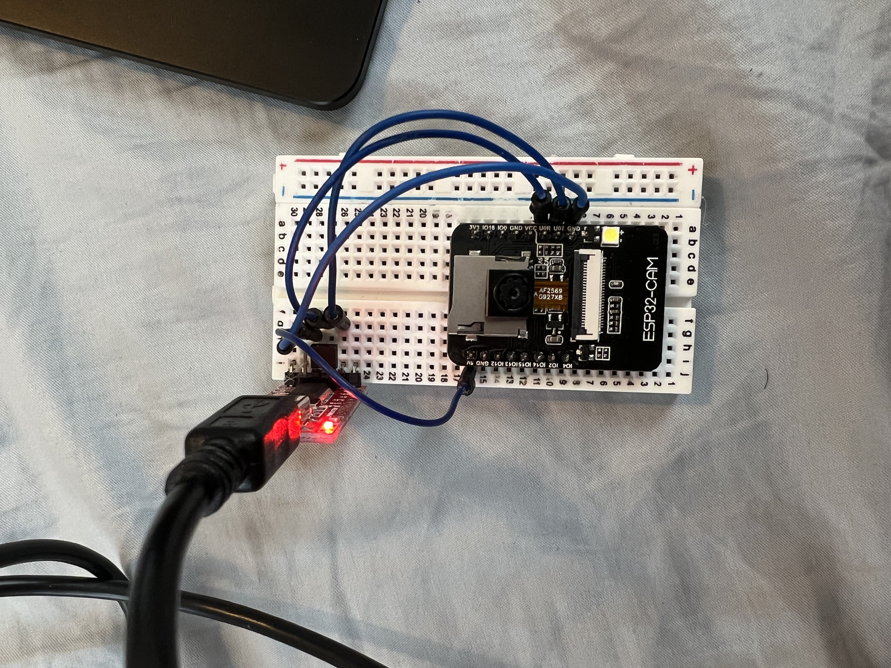
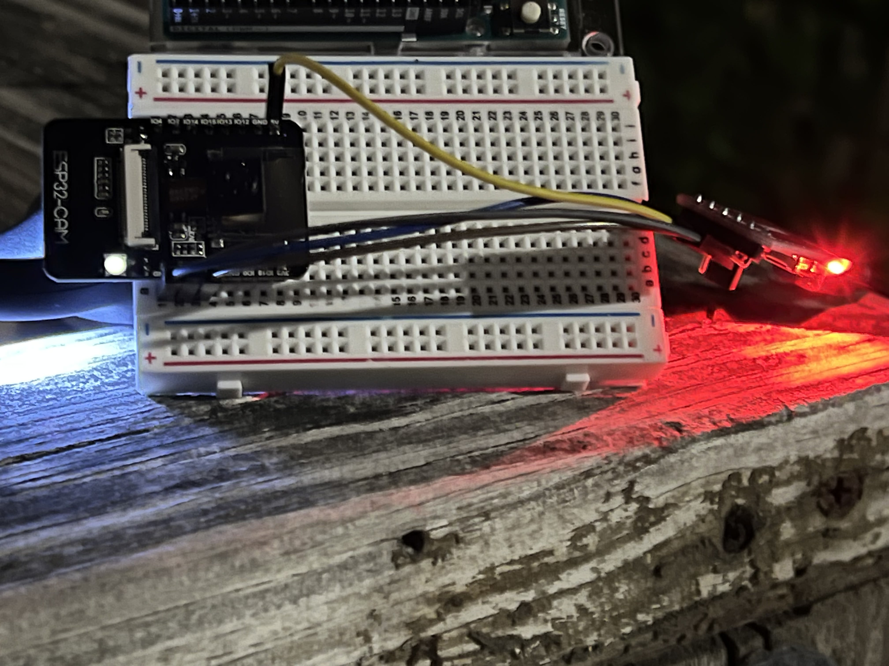
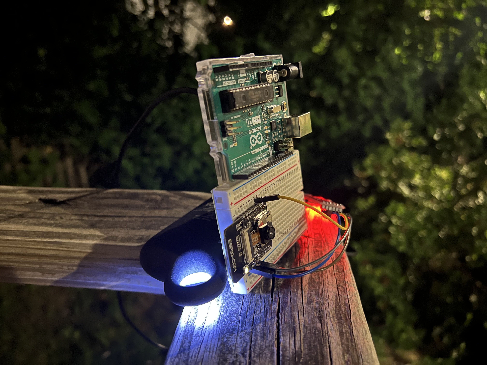
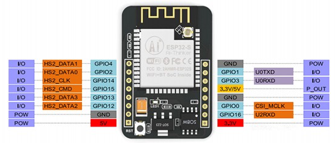
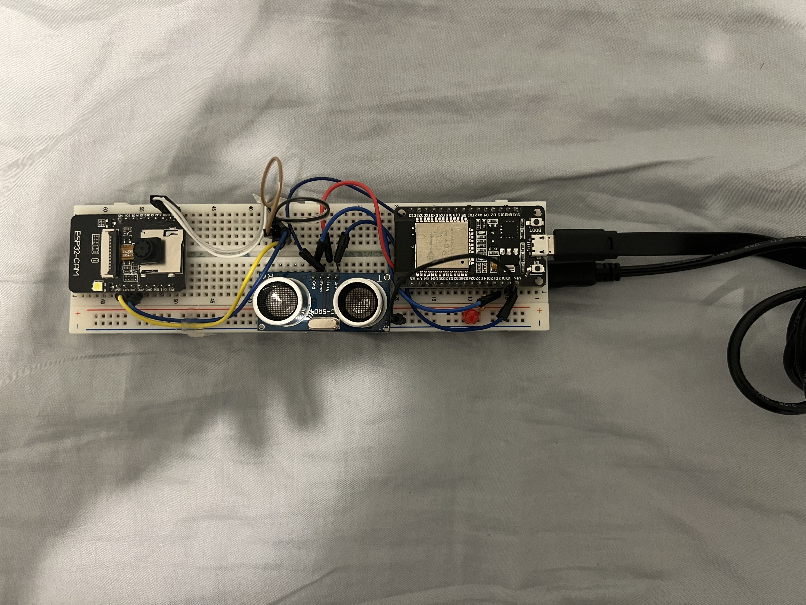
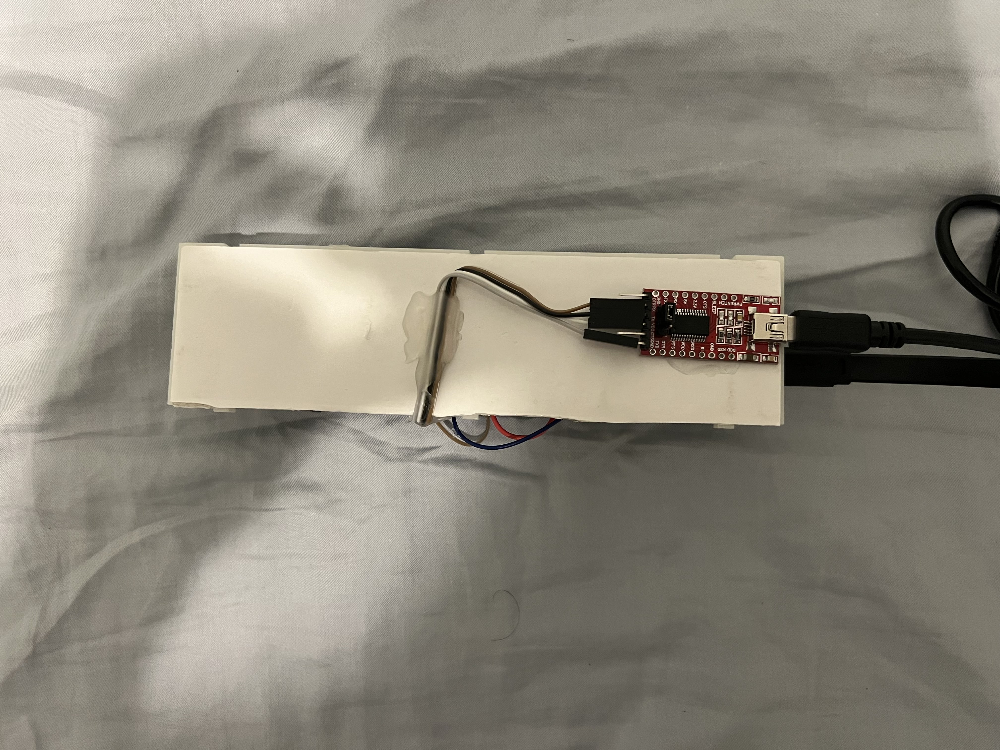

Mustafa Omran: Internet of Things (IoT)
<h5>I always heard the term "IoT" before but I never quite fully understood what it really meant. According to Google, "The Internet of Things (IoT) describes the network of physical objects". But what does that really mean? This meant that this week's assignment on internet of things was really the first time I got to learn about this topic. </h5>
<hr><br>
<h5>First, lets explain what IoT is. Say you have a security camera. You want to have the piece of mind knowing that the area you placed said camera is monitorable from anywhere, anytime. But how does it do that? At the end of the day, a camera is just a bunch of pixels that capture light housed in a plastic box. How could you, the user, access said piece of electronic mixture? There comes IoT! By connecting a security camera to a connection, we can access this connection from anywhere! IoT boils down to stuff connected to each other.</h5>
<br><h5>Speaking of which, for this week's assignment, I wanted to make a security camera that would monitor my room when I'm not home because...siblings. </h5>
<br><hr><br><h5>I first started by <a target="_blank" href="https://randomnerdtutorials.com/esp32-cam-video-streaming-face-recognition-arduino-ide/#:~:text=The%20ESP32%2DCAM%20is%20a,files%20to%20serve%20to%20clients." style="color: #0645AD">this tutorial</a> which went on to explain how the ESP32-CAM even works and how to wire it up. On my quest, I learned that since the ESP32<u>-CAM</u> doesn't have any type of input to be connected and controlled by a computer. To solve that issue, the tutorial recommended that I use something called a FTDI board. This board woud go on to serve as a kind of USB to ESP32-CAM adapter that would allow me to do things like upload some code. After uploading the code I was able to make this!</h5> <h6>*The arduino serves no purpose. My brilliant mind glued it to the only breadboard I had for another assignment 🤦</h5>
<br>


<h5>I set it up to monitor my house's front entrance</h5>
<video width="600" controls>
<source src="../images/IoT/esp-cam1.mp4" type="video/mp4">
</video>
<br><br><h3>Circuit & Pinout</h3>

<img src="../images/iot/ESP32-CAM-FTDI-programmer-5V-supply.png" width="400" alt="">
<br><hr style="border-top: dotted 5px;"><br><h5>Done? That's not how it works over here. As an upgrade to the previous system, I initially wanted to set up a web server that would allow me to access video footage from anywhere in the world. However, after looking trying multiple times and following different tutorials, I wasn't able to make it work. I experimented with pyro/motion sensors in order to make it so if motion was detected, a video would be recorded but the pyro sensors either had VERY limited range or they were buggy. Which added on top of the face that I wouldn't be able to test them because of the constant, unavoidable movement that was happening in my areas of work.</h5>
<br><h5>Since my final project idea is a self-driving car, it was crucial for me to be comfortable with ultrasonic sensors. I attached an HC-SR04 to a breadboard that was connected to a regular ESP32.</h5>
<br><h3>Circuit</h3>
<!-- Image of Circuit -->
<br>
<h5>Which turned out to this: </h5>


<br><br><h5>I went on to attaching the setup a wall right in front of my door in order to make the ultrasonic sensor pointed at said door. I then measured the distance between the sensor and the <u>closed</u> door. This meant that if the door was opened, the distance the HC-SR04 would pick up, would be less than it was before. Here's an example with a shorter distance using my hand. Every time my hand reaches gets closer than the "authorized" distance, it triggers the LED to turn on</h5>
<video width="400" controls>
<source src="../images/IoT/IMG_0351.MOV.mp4" type="video/mp4">
</video>
<br><br><h5>While I'm really happy with this, I really wanted to be able to access it from anywhere. While that wasn't possible, I found another solution inspired by <a href="https://tomkinsc.github.io/harvard-ps70/" style="color: #0645AD" target="_blank">Chris Tomkins-Tinch's smart freezer example</a>. Since the ESP32 can connect to Wi-Fi, it is amazingly able to send emails. I followed <a href="https://randomnerdtutorials.com/esp32-send-email-smtp-server-arduino-ide/#:~:text=To%20send%20emails%20with%20the%20ESP32%2C%20we'll%20use%20the,email%20with%20and%20without%20attachments." style="color: #0645AD" target="_blank">this tutorial</a> on how to send an email using an SMTP server. After a great success, I used advantage of something U.S and Canadian carriers do called <a href="https://en.wikipedia.org/wiki/SMS_gateway#Email_clients">E-mail to SMS Gateways</a> these gateways allow for someone to send an email to any carrier which would then go on to be forwarded to a number using SMS. For example, if I sent an email to <b>XXXXXX2722@vtext.com</b> (number blurred out for obvious privacy reasons) I would recieve whatever was sent in that email as a text message</h5>
<video width="500" controls>
<source src="../images/IoT/Untitled.mp4" type="video/mp4">
</video>
<br><br>
<h3>Code</h3>
<pre><code>
const int trigPin = 5;
#include ESP_Mail_Client.h>
#include WiFi.h>
const int echoPin = 18;
const int LED = 14;
//define sound speed in cm/uS
#define SOUND_SPEED 0.034
#define WIFI_SSID "xxxxxx"
#define WIFI_PASSWORD "xxxxxx"
#define SMTP_HOST "smtp.gmail.com"
#define SMTP_PORT 465
/* The sign in credentials */
#define AUTHOR_EMAIL "xxxxxxx@gmail.com"
#define AUTHOR_PASSWORD "jxriysyclydbuuiy"
/* Recipient's email*/
#define RECIPIENT_EMAIL "xxxxxxxxxx@vtext.com"
String CAM_URL = "http://xxx.xxx.x.xxx";
String LOCK_URL = "http://xxx.xxx.x.xxx";
/* The SMTP Session object used for Email sending */
SMTPSession smtp;
/* Callback function to get the Email sending status */
void smtpCallback(SMTP_Status status);
long duration;
float distanceCm;
float distanceM;
void setup() {
Serial.begin(115200); // Starts the serial communication
pinMode(trigPin, OUTPUT); // Sets the trigPin as an Output
pinMode(echoPin, INPUT); // Sets the echoPin as an Input
pinMode(LED, OUTPUT);
Serial.print("Connecting to AP");
WiFi.begin(WIFI_SSID, WIFI_PASSWORD);
while (WiFi.status() != WL_CONNECTED){
Serial.print(".");
delay(200);
}
Serial.println("");
Serial.println("WiFi connected.");
Serial.println("IP address: ");
Serial.println(WiFi.localIP());
Serial.println();
}
void loop() {
digitalWrite(LED, LOW);
// Clears the trigPin
digitalWrite(trigPin, LOW);
delayMicroseconds(2);
// Sets the trigPin on HIGH state for 10 micro seconds
digitalWrite(trigPin, HIGH);
delayMicroseconds(10);
digitalWrite(trigPin, LOW);
// Reads the echoPin, returns the sound wave travel time in microseconds
duration = pulseIn(echoPin, HIGH);
// Calculate the distance
distanceCm = duration * SOUND_SPEED/2;
distanceM = distanceCm/100;
if (distanceCm < 10) {
digitalWrite(LED, HIGH);
/* Set the callback function to get the sending results */
smtp.callback(smtpCallback);
/* Declare the session config data */
ESP_Mail_Session session;
/* Set the session config */
session.server.host_name = SMTP_HOST;
session.server.port = SMTP_PORT;
session.login.email = AUTHOR_EMAIL;
session.login.password = AUTHOR_PASSWORD;
session.login.user_domain = "";
/* Declare the message class */
SMTP_Message message;
/* Set the message headers */
message.sender.name = "ESP";
message.sender.email = AUTHOR_EMAIL;
message.subject = "Bedroom Security";
message.addRecipient("Mustafa", RECIPIENT_EMAIL);
//Send raw text message
String textMsg = "Alert! Ultrasonic Sensor triggered. Tap "+CAM_URL+" to view event or tap "+LOCK_URL+" to Lock/Unlock door";
message.text.content = textMsg.c_str();
message.text.charSet = "us-ascii";
message.text.transfer_encoding = Content_Transfer_Encoding::enc_7bit;
message.priority = esp_mail_smtp_priority::esp_mail_smtp_priority_low;
message.response.notify = esp_mail_smtp_notify_success | esp_mail_smtp_notify_failure | esp_mail_smtp_notify_delay;
/* Set the custom message header */
//message.addHeader("Message-ID: <abcde.fghij@gmail.com>");
/* Connect to server with the session config */
if (!smtp.connect(&session))
return;
/* Start sending Email and close the session */
if (!MailClient.sendMail(&smtp, &message))
Serial.println("Error sending Email, " + smtp.errorReason());
}
Serial.print("Distance (m): ");
Serial.println(distanceM);
delay(500);
}
void smtpCallback(SMTP_Status status){
/* Print the current status */
Serial.println(status.info());
/* Print the sending result */
if (status.success()){
Serial.println("----------------");
ESP_MAIL_PRINTF("Message sent success: %d\n", status.completedCount());
ESP_MAIL_PRINTF("Message sent failled: %d\n", status.failedCount());
Serial.println("----------------\n");
struct tm dt;
for (size_t i = 0; i < smtp.sendingResult.size(); i++){
/* Get the result item */
SMTP_Result result = smtp.sendingResult.getItem(i);
time_t ts = (time_t)result.timestamp;
localtime_r(&ts, &dt);
ESP_MAIL_PRINTF("Message No: %d\n", i + 1);
ESP_MAIL_PRINTF("Status: %s\n", result.completed ? "success" : "failed");
ESP_MAIL_PRINTF("Date/Time: %d/%d/%d %d:%d:%d\n", dt.tm_year + 1900, dt.tm_mon + 1, dt.tm_mday, dt.tm_hour, dt.tm_min, dt.tm_sec);
ESP_MAIL_PRINTF("Recipient: %s\n", result.recipients);
ESP_MAIL_PRINTF("Subject: %s\n", result.subject);
}
Serial.println("----------------\n");
}
}
// Prints the distance in the Serial Monitor
</code></pre>
<h5>After updating the code, I made it so that if door was detected to be opened, It would send me a text message. If I was home, it will also allow me to open the ESP32-CAM footage to allow me to view the live event.</h5>
<br><h4>Here's my Final Result</h4>
<h6>*I sincerly apologize for getting a bit too carried away</h6>
<video width="600" controls>
<source src="../images/IoT/EvilMustafa.mp4" type="video/mp4">
</video>
<br><br><br>
<p style="text-align: right;">&copy; 2022 Mustafa Omran</p>